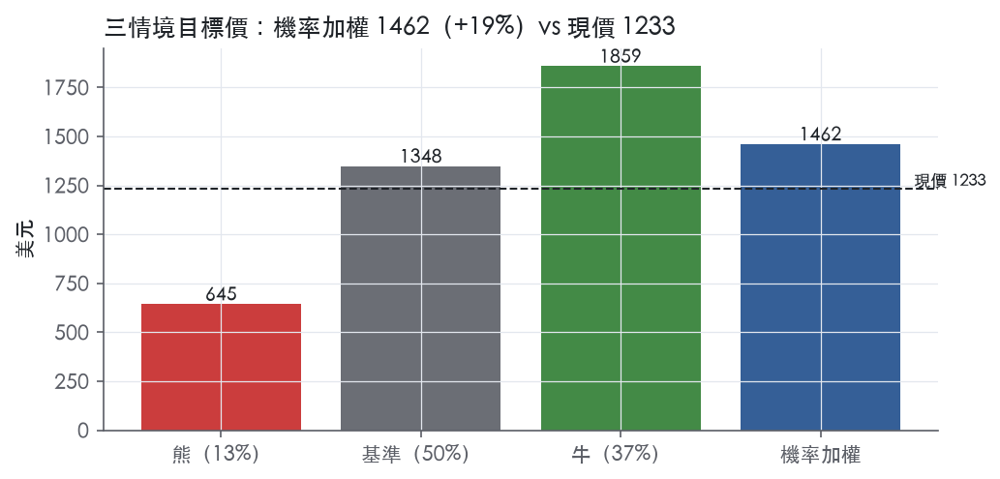
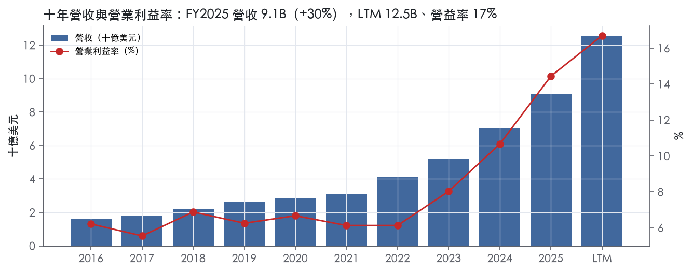
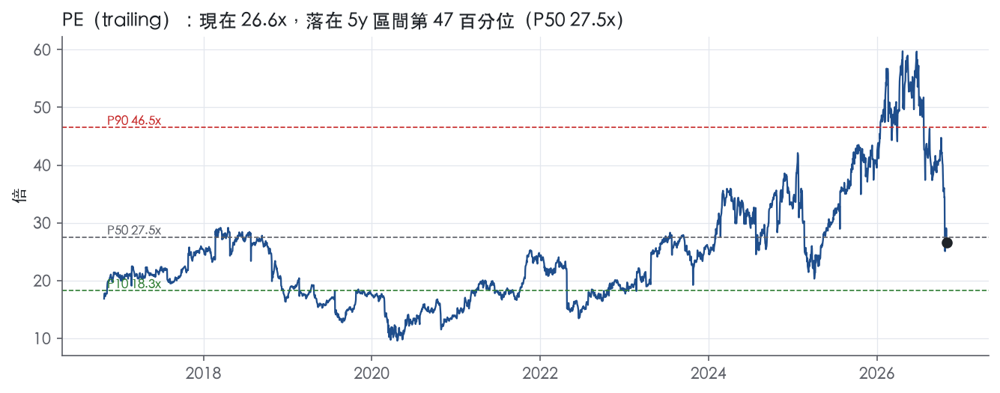
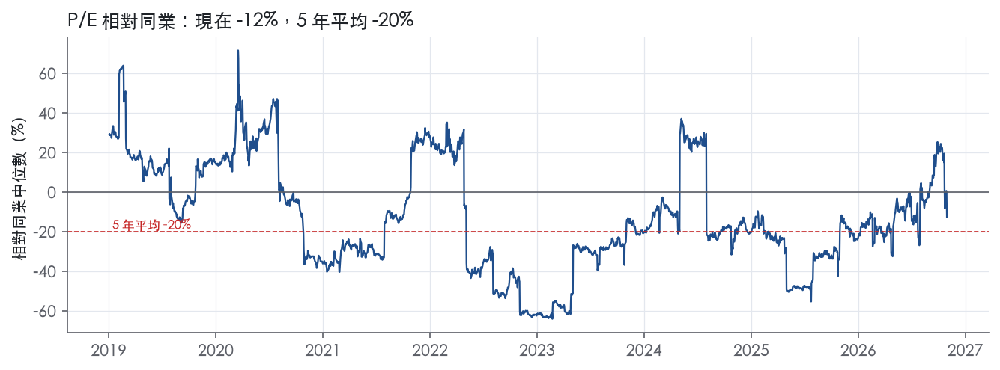
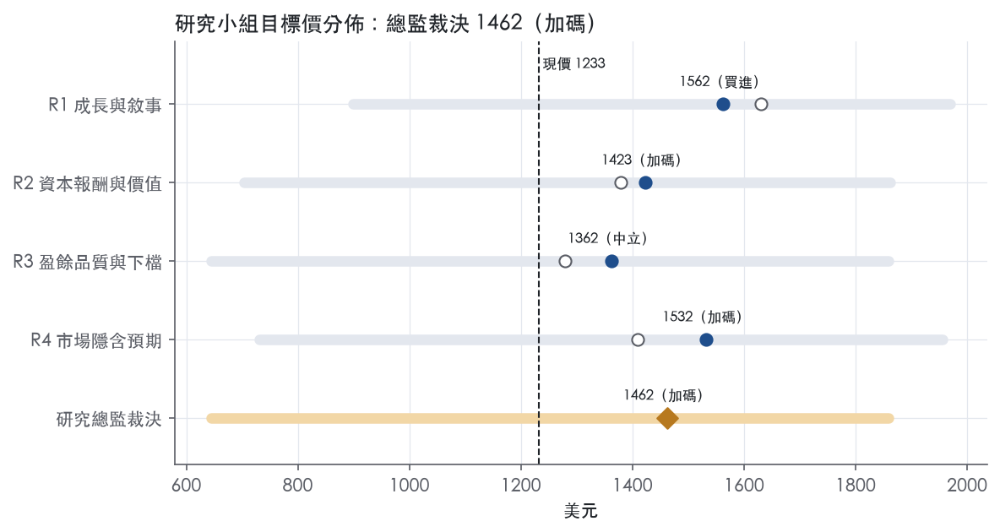
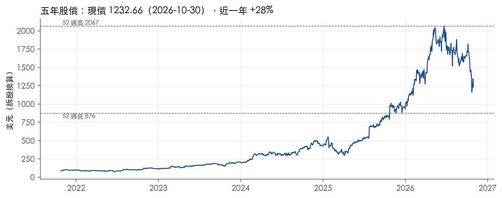

評等總表 › 工業 › FIX
訂單鎖成長、倍數微縮，偏多｜評等 加碼｜目標價 1462
| 報告日 | 評等 | 目標價 | 當時股價 | 超額報酬 |
|---|---|---|---|---|
| 2026-10-30 | 加碼 | 1,462 | 1,233 | +8.8% |
| 評等 | 加碼 |
| 12 個月目標價 | 1462 美元 |
| 現價 | 1232.66 美元（2026-10-30） |
| 預期報酬 | 股價 +18.6%＋股息 0.2%＝總報酬 +18.8%；同業籃門檻 10.0%，超額 +8.8% |
| 估值方法 | P/E 18.5x，套在第 5–8 季的EPS（也就是一年後的未來四季） |
| 三情境 | 熊 645／基準 1348／牛 1859 |
| 研究流程 | 四位研究員兩輪辯論＋研究總監裁決 |
| 資料來源 | SEC EDGAR XBRL、Tiingo、FRED（全免費） |
訂單鎖成長、倍數微縮，偏多（研究總監裁決，四位研究員兩輪辯論後）
評等 加碼｜12 個月目標價 1462 美元（總監三情境機率加權 1446 與研究員中位數 1477 各半）｜現價 1232.66（2026-10-30）
預期報酬：股價 +18.6%＋股息 0.2%＝總報酬 +18.8%。同業籃門檻 10.0%，超額 +8.8%。
估值方法：P/E 18.5x，套在第 5–8 季的EPS（也就是一年後的未來四季）。三情境：熊 645（13%）／基準 1348（50%）／牛 1859（37%）。
什麼會讓研究總監改變看法：FY2026 年底在手訂單跌破 17.0B 或 2027Q1 訂單季減，熊機率上調到 20% 以上並轉中性；訂單續季增且 FY2027Q2 營益率守住 16.5%，倍數移向持平 19.3x、y2 上修到 25%，轉買進。
| 過去四季（實際，FY2026Q3） | 未來四季 | 第 5–8 季 | 第 9–12 季 | |
|---|---|---|---|---|
| 營收（B） | 12.5B | 17.3B | 20.8B | 22.0B |
| 營收成長 | 50.7% | 38.0% | 20.0% | 6.0% |
| 營業利益率 | 16.7% | 16.2% | 15.5% | 15.0% |
| EPS（美元） | 46.29 | 63.08 | 72.89 | 75.23 |
| EPS 成長 | 96.1% | 36.3% | 15.6% | 3.2% |
| 每股股息（美元） | 3.00 | 3.00 | 3.00 | 3.00 |
| P/E（現價） | 26.6x | 19.5x | 16.9x | 16.4x |
| 股息殖利率（現價） | 0.2% | 0.2% | 0.2% | 0.2% |
過去四季為申報數字；預測為研究總監的假設、程式計算。倍數與殖利率都用現價計算，用來看現價對應各期獲利的高低。
| 情境 | 機率（歷史） | 故事 | 未來四季營收成長 | 第 5–8 季營益率 | 倍數 | 目標價 | 股價漲跌 |
|---|---|---|---|---|---|---|---|
| 熊 | 13%（8%） | 對應風險表第 1 條（科技業 45% 集中、資料中心資本支出反轉）連帶第 3、4 條：2027Q1 在手訂單季減、cost-to-cost 一次回沖、壓價使營益率降至同業上緣 12–13%，總經取本行下行路徑 | 25.0% | 13.0% | 14.0x | 645 | -47.7% |
| 基準 | 50%（54%） | 訂單轉營收撐住 38%／20% 兩年成長，毛利率自高原回落至營益率 15.5%，前瞻倍數由 19.3x 小幅收縮到 18.5x | 38.0% | 15.5% | 18.5x | 1348 | 9.4% |
| 牛 | 37%（38%） | 2027 年在手訂單續季增、懸崖推到 2028 之後，營益率守住 17% 高原，前瞻倍數重新定價到持平點之上 | 40.0% | 17.0% | 22.0x | 1859 | 50.8% |
目標價由程式依研究總監的驅動與倍數計算；機率由研究總監給定。括號內是歷史頻率：把這檔股票過去十年 12 個月報酬的波動形狀，置中在基準情境，結果落在各情境附近的比例。

四位研究員用不同方法各自估值，回應研究總監的質疑後交出第二輪，最後由總監逐點裁決。各研究員的主張見第七章，裁決理由見第八章，完整論證見《研究底稿》。
| 立場（一輪→二輪） | 加權目標價（一輪→二輪） | 評等（一輪→二輪） | 第二輪倍數 | 熊～牛目標價 | |
|---|---|---|---|---|---|
| R1 成長與敘事 | 看多→看多 | 1630→1562 | 買進→買進 | 23.0x | 899～1970 |
| R2 資本報酬與價值 | 中性→中性 | 1379→1423 | 中立→加碼 | 22.0x | 703～1862 |
| R3 盈餘品質與下檔 | 中性→中性 | 1279→1362 | 減碼→中立 | 18.0x | 645～1859 |
| R4 市場隱含預期 | 看多→看多 | 1409→1532 | 中立→加碼 | 18.5x | 731～1956 |
| 研究總監裁決 | 看多 | 1462 | 加碼 | 18.5x | 645～1859 |
目標價由程式依各自的驅動與倍數計算；評等＝機率加權總報酬 − 同業籃門檻。
Comfort Systems USA 是一家機電承包商，透過 50 個營運單位、190 個據點、遍布 142 個城市，為商業、工業及機構建築提供機械（HVAC、管線配件、場外施工、監控及消防）與電氣系統的建置、安裝、維護、修理與更換服務¹。公司成立於 1997 年，為美國德拉瓦州公司¹。客戶實質上全部為商業、工業及機構客戶，以及多戶住宅案件¹。公司估計美國商業、工業及機構機電承包業每年產生約 7,000 億美元營收，公司在這個高度分散、以本地中小型業者為主的市場中屬於規模較大者¹。本質上這是一家靠併購滾雪球、同時受惠於資料中心與高科技建廠熱潮的機電工程服務商。
公司分為機械與電氣兩大服務線，2025 年機械服務占營收 73.3%，電氣服務占 26.7%¹。從服務型態看，新建設施的安裝服務占 2025 年合併營收約 63.2%，既有建築的翻修、擴建、維護、修理與更換服務占 36.8%¹。「設計施工」(design and build) 模式讓公司與業主建立長期關係並負責設計、工程與安裝；「依圖施工」(plan and spec) 則是由第三方設計、公開招標¹。維護服務部分，約 92.7% 的營收是以專案基礎認列，2025 年底在建專案共 8,427 件、合約總值約 24.17B 美元，平均專案工期六到九個月、平均合約金額約 2.9M 美元；另有 1,668 件合約金額超過 2M 美元的大型專案，其中最大一件合約金額達 496.9M 美元¹。10-K 未揭露兩個服務線各自的毛利率或營業利潤率。公司終端市場分布高度集中於科技業：2025 年科技業占營收 45.0%、製造業 22.1%、醫療 8.9%、教育 7.3%、政府 5.0%、辦公大樓 5.0%、零售餐飲娛樂 3.7%、多戶住宅 1.4%、其他 1.6%¹。科技業（主要是資料中心）占比近一半，是公司近兩年營收加速的核心驅動力。
公司客戶基礎分散，最大單一客戶占 2025 年合併營收 12.8%，且最大客戶每年可能變動¹。客戶類型涵蓋建築業主與開發商、物業管理者、總承包商、建築師與顧問工程師¹。公司以地方管理團隊負責日常營運決策，並設有全國性銷售團隊（national accounts group）服務跨據點需求的客戶¹。地理上公司在美國各區域皆有布局，藉此降低對單一地區景氣的曝險¹。截至 2026 年 9 月，公司據點已增至 211 個、155 個城市，相較 10-K 揭露的 190 個據點、142 個城市持續擴張²。公司採自保（self-insure）承擔工人賠償、雇主責任、汽車責任、一般責任及員工團體醫療理賠中大額自負額部分的風險¹。原材料與零組件（如風管、管線、閥件、電線、鋼材）向多家國內外供應商採購，直接採購商品與成品約占平均專案成本的 40% 至 45%¹。
FY2025Q4（12/31）營收 2.65B 美元、年增 41.7%，EBITDA 0.46B 美元（is/cf/bs 資料包 FY2025Q4 各項）。FY2026Q1（3/31）營收 2.87B 美元、年增 56.5%（等資料包欄位）。FY2026Q2（6/30）營收為 3,265,656 千美元，較去年同期 2,173,319 千美元成長；淨利為 441,602 千美元或每股稀釋 12.53 美元，較去年同期 230,848 千美元、每股 6.53 美元分別成長 92%；營運現金流達 1.14B 美元³。CEO Brian Lane 表示：「我們的團隊在全國市場持續展現無與倫比的執行力…較去年同期營收成長 50%，每股盈餘成長 92%，且營運現金流超過 10 億美元，前所未見」³。Q2 底在手訂單（backlog）為 14.06B 美元，較 2026 年 3 月底的 12.45B 美元及 2025 年 6 月底的 8.12B 美元均明顯成長；同店基礎下訂單由 8.12B 增至 13.70B 美元³。FY2026Q3（9/30）營收為 3,766,302 千美元，較去年同期 2,450,969 千美元成長；淨利 489,044 千美元或每股稀釋 13.91 美元，較去年同期 291,615 千美元、每股 8.25 美元分別成長約 50% 及 70%；營運現金流達 1.01B 美元²。CEO 指出：「本季每項指標都呈現超凡的結果…營收成長 50%，每股盈餘跳增 70%」²。Q3 底在手訂單達 17.81B 美元，較 6 月底的 14.06B 美元及去年同期 9.38B 美元大幅增加；同店基礎下訂單由 9.38B 增至 17.39B 美元²。CEO 對第四季及 2027 年的展望為：「我們相信，截至年底及 2027 年，我們已做好有機成長的準備，並能維持高水準的獲利能力與穩健的持續現金流」²。
公司的核心目的是「打造傳承」(Build Legacies)，策略關鍵目標包括提升獲利與營收成長、推動可持續及高效的建築環境、提升勞動生產力，以及收購互補性業務¹。公司列出七項核心競爭力：安全、客戶服務、設計施工專業、有效的前期施工流程、工時與成本追蹤、能源效率及永續設計領導地位，以及既有建築系統的頂級服務能力¹。公司明確表示將透過收購進一步提升現金流與營業利潤，持續尋找具備優秀組織團隊、良好安全紀錄、設計及能源效率能力、理想市場定位及穩定正向現金流的併購標的¹。公司亦強調持續投資場外及模組化施工能力，透過收購及後續投資擴大這項服務供給，並視其為複雜施工案的關鍵優勢¹。此外，公司持續推動「服務成長計畫」(Service Growth Initiative)，投入管理與銷售資源招募有經驗人員以擴大服務及維護營收¹。從財報數字看，科技業（資料中心）佔營收比重快速攀升、營益率從 FY2024 的 10.7% 一路拉升至 LTM 的雙位數高段，顯示公司正處於資料中心建設紅利的高峰期，但這種集中度也意味著一旦科技資本支出周期反轉，營收與利潤率的下行風險不小。訂單（backlog）連續三季加速成長且遠超營收增速，為未來一至兩年的營收能見度提供支撐，但 10-K 本身也提示 backlog 未必能順利轉化為實際營收與利潤。

Comfort Systems 具備窄護城河，來源是規模帶來的採購、預製與跨據點人力調度成本優勢；產業高度分散且以價格競爭為主，我們沒有把握這個優勢能撐過一次完整的科技資本支出下行週期，再延續到寬護城河要求的期間。近兩年 ROIC 與利潤率跳升，主要來自資料中心需求週期與有利的定價環境，競爭結構並沒有改變，所以趨勢判為穩定，不判變寬。
優勢以成本優勢為主，轉換成本只是次要而且薄弱的補充。
成本優勢
轉換成本
看得到，而且數字比窄護城河要求的更強；真正的衝突是近年數字好過頭，波動來自上行而不是下行。
最大的威脅是科技業需求反轉後價格競爭回歸，其次是固定價格合約的執行風險，以及人力成本的僵固性。
目標倍數相對同業應給溢價，理由是 ROIC 歷年都高於資本成本，而且公司處於淨現金狀態（-2.11B 美元）。溢價應以 FY2016 至 FY2021 的中段利潤率為基礎資本化，不能把 FY2025 的 73.3% ROIC 與 14.4% 營業利益率當成可持續水準；目前 EV/EBITDA 為 18.2x，已高於 5y P50 的 16.8x 與 10y P50 的 13.9x。溢價只應維持在窄護城河對應的期間，之後收斂到同業水準。
| 指標 | 最新 | 十年平均 | 標準差 | 最低 | 最高 |
|---|---|---|---|---|---|
| ROIC | 73.3% | 29.6% | 18.5% | 14.1% | 73.3% |
| 毛利率 | 24.1% | 20.1% | 1.7% | 17.9% | 24.1% |
| 營業利益率 | 14.4% | 7.7% | 2.6% | 5.6% | 14.4% |
| FCF 利潤率 | 11.3% | 7.1% | 2.8% | 4.2% | 11.3% |
| ROE | 49.2% | 26.9% | 9.7% | 13.9% | 49.2% |
程式計算。資本成本代理值（10 年債＋5%）：10.0%；ROIC 平均減資本成本：19.7%；ROIC 有資料的 9 年中，高於資本成本 9 年。
LTM 營業現金流／淨利 1.84x、FCF／淨利 1.50x，三年與十年平均同樣站在 1 倍以上，應計比率為 -15.0%（負值代表現金流入超過帳列淨利），SBC／營收僅 0.3%，淨負債／EBITDA 為 -0.93x，這些都是乾淨的盈餘品質訊號。唯二非綠燈項目——股東回饋比率與存貨/營收成長差——拆開看都是公司高速成長期的正常現象，不是盈餘灌水或會計操作。
現金持續跑在淨利前面，不是落後。LTM 營業現金流／淨利 1.84x、近三年平均 1.59x、十年平均 1.52x，三個期間都遠高於綠燈門檻 1.00x。FCF／淨利同樣全數在綠燈區，LTM 1.50x。應計比率 LTM 為 -15.0%、近三年 -7.3%、十年 -5.3%，全部是負值，表示會計淨利其實低於現金流入，完全沒有「靠應計堆盈餘」的痕跡。單季層面，FY2025Q1 曾出現 CFO -0.09B、FCF -0.11B 的單季負值（資料包），但隨後三季（Q2 至 Q4）CFO 全數轉正且逐季放大，FY2026Q2 單季 CFO 達 1.14B、FY2026Q3 為 1.01B（資料包），顯示 Q1 是工程業常見的季節性收付款時點問題，不是結構性惡化。新聞稿本身也證實前九個月 CFO 達 2.54B，遠高於去年同期 0.72B²。
公司在本季新聞稿裡沒有做任何非 GAAP 盈餘調整——損益表上唯一的非營業項目是「或有收購對價公允價值變動」，第三季為 -4.295M、前九月為 -16.710M，屬於損益而非額外加回項²。另外有「資產出售利得」第三季 -4.253M、前九月 -5.340M，列在營業利益之上直接沖抵成本²。公司並未單獨揭露重組費用、商譽減損或分離式 SBC 加回，也未提供調整後 EPS 或調整後 EBITDA 的 reconciliation 表。這代表 FIX 公布的 GAAP 淨利基本上就是分析時該用的盈餘，沒有被非 GAAP 口徑「美化」的空間，這點本身是盈餘品質的正面訊號。
槓桿是淨現金，利息保障倍數形同無上限。淨負債／EBITDA LTM 為 -0.93x，公司快照淨負債為 -2.11B。利息保障倍數 LTM 264.9x、近三年 99.8x、十年平均 50.4x，皆遠高於綠燈門檻 8.00x，顯示付息能力完全不是風險因子。稀釋股數年變動為 -0.3%（LTM）、-0.6%（三年）、-0.7%（十年），持續負值代表回購在淨減少股數，沒有稀釋盈餘的隱憂。股利加回購占淨利比率 LTM 33.3%、三年 21.0%、十年平均 28.6%，低於 50% 綠燈門檻而呈黃燈，但這是因為淨利成長速度（FY2025 YoY EPS +97.6%由 14.60 到 28.88，資料包）遠快於股東回饋調升的速度，不是現金不足以支應回饋，且槓桿是淨現金，公司完全有餘裕提高回饋比率。公司在 10-K 中明確說明仍計劃以收購驅動成長，可能以債務、股權或現金融資未來併購⁴，這部分現金留存用於併購，也解釋了回饋比率偏低的原因。
（股利＋回購）／淨利 33.3%，黃燈：這不是現金不足以回饋股東的訊號，而是淨利成長太快、公司選擇把多出來的現金留做併購彈藥。十年平均該比率也僅 28.6%，顯示這是公司一貫的資本配置風格而非惡化趨勢。10-K 策略章明確寫公司會持續尋求併購機會、並可能動用現金進行收購⁴，與淨現金的資產負債表一致，判定為假警報。
存貨成長 − 營收成長（FY2025）+12.4pp，黃燈：這個指標在工程承包業的解讀邏輯跟製造業不同。公司營收認列主要採用「cost-to-cost input method」，收入與獲利是按實際成本占估計總成本的比例逐步認列，而不是靠出貨/存貨週轉⁴。同期公司在建專案金額暴增——backlog 從 2025年9月的 9.38B 增至 2026年9月的 17.81B，年增逾 8.0B²——營運規模急速擴張下，材料與在途工程存貨自然同步墊高，這是業務量能擴張的正常現象，不是銷貨不動、盈餘虛增的警訊。且現金流數據同期走強（見上），直接反證「營運資金吃掉盈餘」的假設不成立。
程式未標出其他紅旗；SBC／營收 0.3%全數為綠燈，股權酬勞對盈餘的稀釋影響微乎其微，且本系統並未加回 SBC，代表現有的現金轉換比率已經是把 SBC 完全算作費用後的結果，品質結論更穩健。
估值應直接使用 GAAP 盈餘，不需要打折，因為公司本身未做任何實質性非 GAAP 調整，且現金轉換、應計比率、槓桿、利息保障四項核心指標全數在綠燈區。唯一的黃燈（股東回饋比率、存貨差距）都可用高速成長期的業務擴張與資本配置策略完全解釋，不構成盈餘灌水或現金跟不上獲利的證據，估值研究員不必對 LTM EPS 46.29 或 EBITDA 2.26B 做保守性折價。槓桿端淨現金狀態不構成任何限制倍數的理由，若要保守，應留意的反而是 backlog 快速累積後執行風險（cost-to-cost 估算誤差、專案損失重估）可能造成未來某幾個季度毛利率波動，而非現有財報的盈餘品質問題。
| 項目 | LTM | 近三年 | 十年 | 燈號 | 規則 |
|---|---|---|---|---|---|
| 營業現金流／淨利 | 1.84x | 1.59x | 1.52x | 綠 | ≥1.00x 綠、<0.80x 紅 |
| 自由現金流／淨利 | 1.50x | 1.37x | 1.25x | 綠 | ≥0.90x 綠、<0.60x 紅 |
| 應計比率（(淨利−CFO)／平均總資產） | -15.0% | -7.3% | -5.3% | 綠 | ≤0.0% 綠、>5.0% 紅 |
| SBC／營收 | 0.3% | 0.2% | 0.3% | 綠 | ≤3.0% 綠、>8.0% 紅 |
| 淨負債／EBITDA | -0.93x | -0.52x | 0.25x | 綠 | ≤1.50x 綠、>3.00x 紅 |
| 利息保障倍數（營業利益／利息） | 264.9x | 99.8x | 50.4x | 綠 | ≥8.00x 綠、<3.00x 紅 |
| 稀釋股數年變動 | -0.3% | -0.6% | -0.7% | 綠 | ≤0.0% 綠、>3.0% 紅 |
| （股利＋回購）／淨利 | 33.3% | 21.0% | 28.6% | 黃 | ≥50.0% 綠、<0.0% 紅 |
| 存貨成長 − 營收成長（FY2025） | +12.4pp | — | — | 黃 | ≤5pp 綠、>15pp 紅 |
程式計算；燈號以 LTM（無則近三年平均）判定。
| 風險 | 觸發指標（看什麼數字、在哪裡看） | 對 EPS 的影響方向與粗略幅度 | 未來 12 個月發生機率 | 出處 |
|---|---|---|---|---|
| 1. 終端市場集中於科技業（資料中心），景氣反轉衝擊營收與利潤率 | 科技業占營收比重（10-K 年度揭露）；backlog 季增速是否由加速轉為持平或下滑（8-K 季度揭露，目前 17.81B，季增 3.8B）² | 方向：負向，大／營益率已從 FY2024 10.7% 衝到近期高點（dv/ltm 資料包），若科技業資本支出降溫，營益率回落空間大 | 中 | ¹＋ |
| 2. 客戶集中度：單一最大客戶占營收 12.8% | 年度 10-K 揭露的最大客戶營收占比變化；該客戶是否續約／終止合約的公告 | 方向：負向，中；若該客戶流失，營收直接按比例下修⁴ | 低 | 10-K 年報 FY2026 Item 1A（風險因素） |
| 3. 固定價格合約成本超支 + cost-to-cost 會計估計翻轉，導致已認列利潤被追溯沖銷 | 季報 MD&A 中是否出現「合約調整」、「估計變更」或毛利率單季異常下滑（可比對 band 毛利率歷史區間） | 方向：負向，中至大（視個案規模，10-K 未給具體金額）⁴ | 中 | 10-K 年報 FY2026 Item 1A（風險因素） |
| 4. Backlog（在手訂單）轉換率不如預期，訂單取消或遞延 | 季度 backlog 絕對值與年增率（最新 17.81B，YoY 由 9.38B 增至 17.81B）²；營收實際認列速度是否落後 backlog 增速 | 方向：負向，中；backlog 成長已遠超營收成長，一旦轉換率下滑，未來營收能見度會快速惡化 | 中 | ²＋ |
| 5. 利率與保證金（surety bond）/保險市場緊縮，推高資金成本並限制承接新案能力 | ust10y／ust2y 走勢（目前 4.98／4.61，mac 資料包）；信用利差 hy_oas（3.26）是否走闊；公司是否公告保證金條件惡化 | 方向：負向，小至中；公司變動利率負債敞口有限（淨負債為負 -2.11B），但保證金／保險緊縮會限制接單能力⁴ | 低 | ⁴＋ |
風險一：科技業集中度是五條裡影響最大的一條。2025 年科技業占合併營收 45.0%，製造業 22.1%，兩者合計近七成¹。這個比重在 10-K 原文的風險因子清單裡完全沒有被單獨列出，公司只籠統寫「經濟衰退」「建築活動地區性疲軟」等不可監測的措辭⁴。但從財務數字看，公司營益率從 FY2024 的 10.7% 一路拉升到近期高點（is/cf/bs 資料包），且 backlog 連三季加速擴張（12.45B→14.06B→17.81B）²，這種斜率顯示公司高度依賴資料中心資本支出周期；一旦科技業客戶（特別是雲端/AI 基建業者）削減資本支出計畫，公司新簽約量與既有 backlog 的轉換速度會同時受挫，而目前 EV/Sales 已達 3.3x（分位 77.0%，band 資料包），估值對成長放緩的容忍度很低。
風險二：客戶集中度原文明確揭露，2025 年最大客戶占合併營收 12.8%，且最大客戶「每年可能變動」⁴。公司強調客戶組合「合理分散」，但單一客戶貢獻破一成的情況下，若該客戶縮減、不續約或終止合約，將對營收與利潤產生「重大不利影響」（material adverse effect）⁴。這條風險可監測性高：每年 10-K 都會揭露當年最大客戶占比，若該數字持續上升或突然下降，都是訊號。
風險三：固定價格合約與 cost-to-cost 會計是機電工程業特有的隱藏地雷。公司採用「完工進度輸入法」（cost-to-cost input method）認列收入，意味著某些合約可能連續多期認列利潤，最終在接近完工時才發現先前估計過於樂觀，導致一次性沖銷⁴。原文直白寫出：「全部的高估金額將在確定的那一期一次性認列，從而抵銷甚至超過該期其他合約原本應認列的利潤」⁴。這是財報品質風險而非總體經濟風險，監測方式是觀察季度毛利率是否出現非典型的單季骤降，對照歷史波動區間。
風險四：Backlog 轉換風險不是原文獨立列出的一條，而是把原文「backlog 可能無法轉化為實際營收或利潤」的警語⁴跟最新季度數字放在一起看出的風險。Backlog 從 2025Q3 的 9.38B 暴增到 2026Q3 的 17.81B，年增超過 8.0B²，這種斜率本身就隱含「有一天會停止加速甚至反轉」的風險；一旦新接單速度放緩，市場會立刻下修未來兩年的營收能見度，即便既有 backlog 還在執行中。
風險五：利率與保證金/保險市場影響相對較小。公司目前淨負債為負（-2.11B，px 資料包），對變動利率負債的敞口有限，但原文仍列出保證金（surety bond）市場緊縮可能限制公司競標能力，以及保險市場成本上升的風險⁴。這條機率判為低，因為公司資產負債表目前非常健康，但仍值得放進清單作為尾部風險監測項。
現價 1232.66 對應 trailing（過去四季）P/E 26.6x、EV/EBITDA 18.1x、EV/EBITA 18.8x、EV/Sales 3.3x、FCF 殖利率 5.7%。主要估值倍數 P/E 現在 26.6x，落在5 年區間第 47 百分位（P10／P50／P90 = 18.3x／27.5x／46.5x）。

把程式的機械基準預測放到現價下，市場付的前瞻倍數是：P/E（未來四季） 19.3x、P/E（第 5–8 季） 15.8x。反推 DCF 顯示市價隱含未來五年營收年成長 14.4%（WACC 9.0%、終值成長 3.0%、FCF 利潤率 10.0%，SBC 不加回）。
| 倍數 | 現在 | 5 年 P10 | 5 年 P50 | 5 年 P90 | 現在分位 | 全期 P50 |
|---|---|---|---|---|---|---|
| P/E | 26.6x | 18.3x | 27.5x | 46.5x | 46.9% | 22.0x |
| EV/EBITDA | 18.2x | 13.7x | 16.8x | 31.1x | 55.9% | 13.9x |
| EV/EBITA | 18.9x | 15.2x | 18.2x | 32.5x | 54.1% | 15.6x |
| EV/EBIT | 19.7x | 18.0x | 21.0x | 34.9x | 30.4% | 18.5x |
| EV/Sales | 3.3x | 1.1x | 1.8x | 5.2x | 77.0% | 1.1x |
| P/S | 3.5x | 1.0x | 1.8x | 5.3x | 77.1% | 1.0x |
| P/FCF | 17.7x | 16.2x | 22.5x | 47.0x | 21.5% | 19.5x |
trailing 倍數（股價 ÷ 過去四季）；分位以每個交易日計算。
同業籃：EME, PWR, MTZ, IESC, APG（手動名單（playbooks/peers.yaml））。評等門檻 10.0%：同業「倍數不變下持有一年」的隱含報酬中位數（＝ FCF 殖利率 ×(1＋g)＋g，g 為 5 年營收年複合成長並夾在 −2%～8%），每家夾在 0～15%、P/E 低於 5 倍視為資料可疑而排除，中位數再限制在 10 年債到 10 年債＋5% 之間（同業原始中位數 11.8%）。
| 代號 | 市值 | 5 年營收 CAGR | 營益率 | ROIC | P/E | 5 年 P/E 中位數 | EV/EBITDA | P/FCF | 隱含報酬 |
|---|---|---|---|---|---|---|---|---|---|
| FIX | 43.1B | 26.1% | 16.7% | 73.3% | 26.6x | 27.5x | 18.1x | 17.7x | 14.1% |
| EME | 29.9B | 14.1% | 10.4% | — | 19.7x | 21.2x | — | 20.2x | 13.4% |
| PWR | 93.5B | 20.5% | 6.8% | 9.6% | 56.2x | 51.3x | 26.9x | 29.6x | 11.6% |
| MTZ | 14.9B | 17.7% | 4.7% | 8.4% | 30.4x | — | 13.8x | 36.7x | 10.9% |
| IESC | 4.1B | 23.1% | 12.4% | 51.3% | 9.2x | 10.5x | — | 18.0x | 14.0% |
| APG | 19.1B | 17.1% | 7.2% | 7.7% | 55.9x | — | 22.2x | 28.5x | 11.8% |
| 同業中位數 | 17.7% | 7.2% | 9.0% | 30.4x | 21.2x | 22.2x | 28.5x | 10.0% |
全部 trailing，程式以各公司 SEC XBRL 與 Tiingo 行情計算；第一列為本檔。
P/E 相對同業中位數：現在 -12.4%，過去 1 年平均 -10.0%、3 年 -15.2%、5 年 -19.8%；EV/EBITDA 相對同業中位數：現在 -18.0%，過去 1 年平均 35.4%、3 年 17.6%、5 年 23.8%。

事後實現前瞻倍數帶（P/E，2018-11-19..2025-11-17）：P10／P50／P90 = 11.0x／13.6x／17.3x。它是每個交易日的股價除以之後四季實際實現的指標；一年後，今天的第 5–8 季正是那時的未來四季，所以這條帶是 12 個月目標價的同口徑倍數。因為用的是事後實際而非當時預期，過去成長超乎預期的公司這條帶會偏低。
程式的機械基準（成長率從過去四季年增率三年收斂到 6%、利潤率持平）用 事後實現前瞻 P/E P50 估值得到 1062（-13.8%），市場現行前瞻倍數（現價 ÷ 基準 未來四季指標）一年後持平，套在基準 第 5–8 季指標得到 1500。這兩個數字只是參考點，不是本報告的目標價；研究員對這個定價的回應在第七章。
下表是每位研究員第一輪（各自獨立）與第二輪（回應研究總監的質疑後）的結果。目標價全由程式依各自的假設計算。
| 立場（一輪→二輪） | 加權目標價（一輪→二輪） | 評等（一輪→二輪） | 第二輪倍數 | 熊～牛目標價 | |
|---|---|---|---|---|---|
| R1 成長與敘事 | 看多→看多 | 1630→1562 | 買進→買進 | 23.0x | 899～1970 |
| R2 資本報酬與價值 | 中性→中性 | 1379→1423 | 中立→加碼 | 22.0x | 703～1862 |
| R3 盈餘品質與下檔 | 中性→中性 | 1279→1362 | 減碼→中立 | 18.0x | 645～1859 |
| R4 市場隱含預期 | 看多→看多 | 1409→1532 | 中立→加碼 | 18.5x | 731～1956 |
| 研究總監裁決 | 看多 | 1462 | 加碼 | 18.5x | 645～1859 |
目標價由程式依各自的驅動與倍數計算；評等＝機率加權總報酬 − 同業籃門檻。
分歧度：第一輪 加權目標價 1279～1630（區間＝現價的 28%）· 倍數 17～25x · 立場 看多×2、中性×2；第二輪 加權目標價 1362～1562（區間＝現價的 16%）· 倍數 18～23x · 立場 看多×2、中性×2。

| 研究員 | 第二輪主張 | 堅持的理由 |
|---|---|---|
| R1 成長與敘事 | 看多，未來四季 EPS 給 23x，介於自家五年中位 27.5x 與 EME 21.2x。 | 在手訂單 17.81B 已鎖住第一年 38% 成長，營益率路徑不再下修。 |
| R2 資本報酬與價值 | 中性，未來四季 EPS 給 22x，錨定自家十年中位 22.0x。 | 成長降檔與 ROIC 上升相抵，這個產業不因 ROIC 高而給高倍數。 |
| R3 盈餘品質與下檔 | 中性，第二年 EPS 給 18x，一年後倍數會收斂到這裡。 | 第三季毛利率 24.8% 與去年持平，營益率擴張全靠費用槓桿。 |
| R4 市場隱含預期 | 看多，第二年 EPS 給 18.5x，高於歷史前瞻帶上緣 17.3x。 | 市場隱含五年營收成長只有 14.4%，低估了成長的延續性。 |
每位研究員的逐條回應與完整論證見《研究底稿》（FIX_研究底稿_2026-11-01.docx）。
| 分歧點 | R1 | R2 | R3 | R4 | 什麼資料會分出勝負 |
|---|---|---|---|---|---|
| 目標倍數與口徑 | 23x@ntm，落在 5y P50 27.5x 與 EME 21.2x 之間 | 22x@ntm，錨 10y P50 22.0x，「成長降、ROIC 升相抵」 | 18x@q5_q8，前瞻帶 P90 17.3x 之上，等於現價對其 EPS 所付倍數 | 18.5x@q5_q8，P90 之上、市場持平 19.3x 之下 | FY2026Q4、FY2027Q1 在手訂單是否續季增（2027-02、2027-05 公布） |
| NTM 營收成長 | 38%，訂單 17.81B 高於 LTM 營收 | 35.8%（基準） | 33%，勞動力上限 | 38%，據點 190→211 | FY2026Q4 營收年增（2027-02）是否 ≥45% |
| Q5–Q8 營收成長 | 20% | 20.9%（基準） | 20%，自家第二年基準率 | 25%，十年中五年 >20% | 2027Q2 在手訂單與 FY2027Q2 營收年增（2027-08） |
| Q5–Q8 營益率 | 16.0% | 15.0% | 15.5%，Q3 毛利率無年增、擴張全來自 SG&A | 16.0%，規模放大利潤率未滑 | FY2026Q4 毛利率（2027-02）是否守住 25.5% |
| 熊機率與熊情境 | 16%，17x@ntm | 18%，16x@ntm，「歷史起點無此曝險」 | 14%，14x，風險 1+3+4 | 14%，13.6x，風險 3+4、無需求崩落 | 2027Q1 在手訂單是否季減、10-Q 估計變動金額（2027-05） |
倍數：選 R4，18.5x eps@q5_q8。 劇本主尺是 Q5–Q8 EPS，同口徑的帶是事後實現前瞻帶（P50 13.6x、P90 17.3x）。R1、R2 用 trailing 錨本身合法，但程式結果表顯示 R1 的 23x@ntm 給出 1478，幾乎貼著「市場現行前瞻倍數一年後持平」的參考點 1500：他一面假設一年後前瞻成長由 36% 降到 20%，一面主張市場付的倍數不變，缺的是「成長減半而倍數不動」的證據。R2 的 10y P50 22.0x窗口大半年份營益率 6–8%（年度表 FY2016–FY2023），與前瞻 15–16% 的盈餘基礎不可比，「低成長＋高 ROIC 與高成長＋中 ROIC 相抵」是斷言，沒有數字。R3 的 18x 錨在「今天價格對我的 Q5–Q8 EPS 付 18x」，用現價定義目標倍數，循環。R4 的錨有兩端：帶的 P90 17.3x（樣本期 EPS 由 3.00 升到 28.88，實現值高於當時預期使帶偏低）與持平點 19.3x，折讓只反映一年後前瞻成長降檔，方向與本行 2027 年成長 1.8、週期性訂單下修一致。四人都沒有用 10 年債壓倍數。
NTM 營收成長：選 R1／R4 的 38%。 在手訂單 17.81B 高於 LTM 營收 12.54B²，平均工期六到九個月¹；R4 依 E3 由 42% 降到 38%，正是讓 NTM 營收不再逼近訂單總額。R3 的 33% 用「合約承諾超出勞動資源」壓，但據點已由 190 增至 211，Q3 營收 3.77B 時營益率 16.6%²，看不到執行瓶頸；研究部四位研究員的營收預測中位誤差都在 −0.4% 到 −0.7%（季度預測紀錄），系統性偏低，該向高的一側修。
Q5–Q8 營收成長：選 R3 的 20%。 這段不在現有訂單覆蓋期內，取決於 2027 年接單。R4 的 25% 引十年中五年超過 20% 的基準率，但那些年份訂單都在加速；本行總經 2027 年成長 1.8 低於共識 2.4、週期性訂單下修，接單不加速時 20% 才是中位。R3 的自家第二年基準率（35% 之後 FY2023 25.8%、FY2025 29.5%，年度表）說明 20% 不偏低。R4 的 y3 10% 一併退回：工期六到九個月、維護服務只占 7.3%，撐不到第三年，R1 已因同樣理由撤回 8%。上檔進牛情境。
Q5–Q8 營益率：選 R3 的 15.5%（路徑 16.2／15.5／15.0）。 決定性證據在 8-K 2026-10-22 損益表：Q3 毛利率 24.8% 與去年同期持平，是本輪第一季沒有年增；營益率由 15.5% 升到 16.6% 全部來自 SG&A 率 9.4%→8.3%；毛利率由 Q1 26.3% 降到 Q3 24.8%。R1／R4 的 16.0% 要 SG&A 槓桿在毛利率續降時完全補上，而兩人營業利益預測中位誤差 +2.6%、+1.8%，系統性偏高；R2 的 15.0% 與 y3 14% 多出的降幅沒有價格競爭回歸的時點證據，他的誤差 −1.1% 偏低。R3 誤差 +0.6% 最接近無偏；我自己的紀錄 +0.9% 偏高，也該向下靠。
熊機率與熊情境：own，13%，內容取 R3。 R2 的 18% 理由是「過去十年的起點沒有這種曝險」，與 R4 第一輪被退回的理由相同，材料只有 2025 年單年的終端市場分布，證明不了。R1 的 16% 有觸發點，但他的熊情境以 17x 套在 ntm EPS，不能移植到 q5_q8 口徑。R3 與 R4 的 14% 都接近歷史，差別在有沒有需求反轉；風險表第 1 條（科技業 45%）機率「中」且是最大的一條，R3 的版本完整對應第 1、3、4 條，取 R3。13% 高於程式對照約 4pp，依據是風險表第 1、3 條各有帶日期的觸發點（2027-02 年底訂單、2027-05 的 Q1 訂單與 10-Q 估計變動）；不再往上，因為本行一年內衰退機率 25% 低於歷史 31%。
漂移與總經偏離。 退回清單：無。R2 靠攏 54%、R3 64% 超過門檻，但 R2 唯一的數字變動（牛情境 y1 45%）回應 V4 並引業務概況章；R3 的 y2 17%→20% 回應 Q6 並附年度表的第二年基準率，機率調整是依 Q2 向歷史靠；R4 遠離中位數；R1 五項變動皆附證據。四人 macro_deviations 皆為空，無需逐條裁決；本行工業指引用在 y2 與倍數折讓，銅與信用利差的股價敏感度 |t| 0.5、0.6，不採用。
與機械基準不同的驅動：
目標倍數 18.5x eps @ q5_q8。錨：事後實現前瞻帶 P90 17.3x 之上（帶偏低）、市場持平 19.3x 之下（一年後前瞻成長由 36% 降到 20%、本行總經放慢）；低於持平點的理由是個股成長降檔，不是利率。相對同業：同業 P/E 中位 30.4x 被 PWR 56.2x、APG 55.9x 撐高，不作錨；FIX 對同業折價現在 −12.4%、五年平均 −19.8%，目標維持在折價區間。trailing 口徑的交叉參考：EME 5y 中位 21.2x、自家 10y P50 22.0x 對應 ntm 指標，程式結果表顯示 R2 的 22x@ntm 給出 1349，與我的目標方向一致。其他交叉驗證：P/FCF 17.7x 在五年 21.5 分位，但 LTM 營業現金流／淨利 1.84x 來自營運資金（財務體質章），不當支撐；反推 DCF 隱含五年營收成長 14.4%，我們前兩年高於它、第三年起低於它。
機率依據：我的牛、熊相對基準的幅度與 R2、R3 的情境相當，程式對照歷史落在牛區／基準區／熊區為 38%／52%／10%（R2）、36%／55%／9%（R3）。我給 37／50／13：牛 −1pp，熊 +4pp，偏離都在 10pp 內，理由見熊機率裁決。牛高於熊，與歷史順序一致，不延續本研究部 22 份報告熊高於牛的慣性。
現價對基準 NTM EPS 付 19.3x、對 Q5–Q8 EPS 付 15.8x，反推 DCF 隱含五年營收成長 14.4%：市場在為「2027 年之後的懸崖」定價。差距主要在盈餘，不在倍數：前兩年營收成長（38%、20%）遠高於市場隱含，營益率雖低於機械基準 1.2pp，EPS 仍大幅高於 LTM 46.29；倍數上我們只比持平點低約一成以內。基準情境報酬接近門檻 10.0%，牛 37% 對熊 13% 的右偏使機率加權報酬高於門檻，立場偏多，程式評等預期為加碼，兩者一致；若程式給中立，原因是基準點估本身只與門檻打平，不是方向有分歧。
現價 1232.66 → 點估目標價 1348 → 機率加權目標價 1446 → 目標價 1462，差距拆成五段：成長順延 +267 美元（市場現行倍數 19.3x 一年後持平、獲利照機械基準）；倍數差 -59 美元（總監倍數 18.5x vs 市場持平倍數 19.3x，同一機械基準預測）；盈餘差 -92 美元（總監預測的第 5–8 季EPS 0.0B vs 機械基準 0.0B，同一倍數）；情境不對稱 +98 美元（機率加權減點估）；研究小組平均 +16 美元（總監機率加權 1446 與研究員第二輪中位數 1477 各半）。各段相加等於目標價減現價。本階段未接賣方共識，差距以市場隱含預期為對照。
| 驅動 | 機械基準 | 研究總監 | 差異 |
|---|---|---|---|
| 未來四季營收成長 | 35.8% | 38.0% | +2.2 pp |
| 第 5–8 季營收成長 | 20.9% | 20.0% | -0.9 pp |
| 第 9–12 季營收成長 | 6.0% | 6.0% | ＝ |
| 未來四季營益率 | 16.7% | 16.2% | -0.5 pp |
| 第 5–8 季營益率 | 16.7% | 15.5% | -1.2 pp |
| 第 9–12 季營益率 | 16.7% | 15.0% | -1.7 pp |
| D&A／營收 | 1.3% | 1.3% | ＝ |
| 資本支出／營收 | 4.5% | 3.0% | -1.5 pp |
| SBC／營收 | 0.3% | 0.3% | ＝ |
| 稅率 | 20.9% | 20.9% | ＝ |
| 股數年變動 | -0.6% | -0.6% | ＝ |
研究總監只寫偏移，未寫的沿用基準。
| 期 | 營收 | 成長 | 營益率 | 營業利益 | EBITDA | EBITA | 淨利 | EPS | FCF | 期末淨負債 |
|---|---|---|---|---|---|---|---|---|---|---|
| 未來四季 | 17.3B | 38.0% | 16.2% | 2.8B | 3.0B | 2.9B | 2.2B | 63.08 | 2.0B | -3.5B |
| 第 5–8 季 | 20.8B | 20.0% | 15.5% | 3.2B | 3.5B | 3.4B | 2.5B | 72.89 | 2.3B | -5.3B |
| 第 9–12 季 | 22.0B | 6.0% | 15.0% | 3.3B | 3.6B | 3.5B | 2.6B | 75.23 | 2.3B | -7.0B |
程式依上表的驅動計算；季度用最近四季季節性分攤；不含營運資金變動。
估值方法：P/E 18.5x，套在第 5–8 季的EPS（也就是一年後的未來四季）。研究總監目標倍數的錨：事後實現前瞻 P/E 帶 P90 17.3x 之上（樣本期盈餘超預期使帶偏低）、市場持平 19.3x 之下（一年後前瞻成長由 36% 降至 20%、本行 2027 成長 1.8）；折讓是個股成長降檔，非利率。
計算：EPS（第 5–8 季） 72.89 × 18.5x → 點估目標價 1348（9.4%）；隱含 P/E（未來四季）21.4x、P/E（第 5–8 季）18.5x、EV/EBITDA（第 5–8 季）12.3x、FCF 殖利率（第 5–8 季）4.8%。
總監三情境機率加權目標價 1446，研究員第二輪中位數 1477，兩者各半＝目標價 1462；預期報酬 股價 +18.6%＋股息 0.2%＝總報酬 +18.8%；減評等門檻 10.0%（同業籃隱含報酬中位數（EME, PWR, MTZ, IESC, APG））＝超額報酬 +8.8% → 評等 加碼（超額 >+15% 買進、+5～+15% 加碼、±5% 中立、−5～−15% 減碼、<−15% 賣出）。同一份資料重開研究小組，超額約有正負四個百分點的雜訊（一個標準差，二十檔實測）；以此估計，評等落在其他級距的機率約二成。
| 情境 | 機率 | 未來四季成長 | 第 5–8 季成長 | 第 5–8 季營益率 | EPS（第 5–8 季） | 倍數 | 目標價 |
|---|---|---|---|---|---|---|---|
| 熊 | 13% | 25.0% | 0.0% | 13.0% | 46.08 | 14.0x | 645 |
| 基準 | 50% | 38.0% | 20.0% | 15.5% | 72.89 | 18.5x | 1348 |
| 牛 | 37% | 40.0% | 25.0% | 17.0% | 84.51 | 22.0x | 1859 |
| 主張 | 驗證日 | 看哪個數字 | 門檻 |
|---|---|---|---|
| FY2026 年底在手訂單不跌破 17.0B | 2027-03-01 | FY2026Q4 財報揭露之 backlog | >= 17.0B |
| FY2027Q1 營收維持高成長 | 2027-05-15 | FY2027Q1 營收年增率 | >= 35% |
| 營業利益率自高原緩降但不崩 | 2027-08-15 | FY2027Q2 單季營業利益率 | 15.0%–16.5% |
| 市場因成長降檔小幅收縮倍數 | 2027-10-31 | trailing P/E | <= 24x |
到期由程式結算（第 5 階段帳本）。
內文上標數字對應下列公司申報文件；未標上標的分析與判斷，是研究小組的觀點。報告中的每個數字都經程式逐一核對資料包或原文。
| 期 | 營收 | 成長 | 毛利率 | 營益率 | EBITDA | 淨利 | EPS | CFO | FCF | ROIC | 淨負債 | 稀釋股數 |
|---|---|---|---|---|---|---|---|---|---|---|---|---|
| FY2016 | 1.6B | — | 21.0% | 6.2% | 0.1B | 0.1B | 1.72 | 0.1B | 0.1B | — | -0.0B | 0.0B |
| FY2017 | 1.8B | 9.4% | 20.5% | 5.6% | 0.1B | 0.1B | 1.47 | 0.1B | 0.1B | 16.4% | 0.0B | 0.0B |
| FY2018 | 2.2B | 22.1% | 20.4% | 6.9% | 0.2B | 0.1B | 3.00 | 0.1B | 0.1B | 23.5% | 0.0B | 0.0B |
| FY2019 | 2.6B | 19.8% | 19.2% | 6.3% | 0.2B | 0.1B | 3.08 | 0.1B | 0.1B | 19.1% | 0.2B | 0.0B |
| FY2020 | 2.9B | 9.2% | 19.1% | 6.7% | 0.2B | 0.2B | 4.09 | 0.3B | 0.3B | 18.2% | 0.2B | 0.0B |
| FY2021 | 3.1B | 7.6% | 18.3% | 6.1% | 0.2B | 0.1B | 3.93 | 0.2B | 0.2B | 14.1% | 0.3B | 0.0B |
| FY2022 | 4.1B | 34.7% | 17.9% | 6.1% | 0.3B | 0.2B | 6.82 | 0.3B | 0.3B | 21.8% | 0.2B | 0.0B |
| FY2023 | 5.2B | 25.8% | 19.0% | 8.0% | 0.5B | 0.3B | 9.01 | 0.6B | 0.5B | 30.1% | -0.2B | 0.0B |
| FY2024 | 7.0B | 35.0% | 21.0% | 10.7% | 0.8B | 0.5B | 14.60 | 0.8B | 0.7B | 50.2% | -0.5B | 0.0B |
| FY2025 | 9.1B | 29.5% | 24.1% | 14.4% | 1.4B | 1.0B | 28.88 | 1.2B | 1.0B | 73.3% | -0.8B | 0.0B |
SEC XBRL；每股數據已依拆股換算到現在股數基準。EBITDA 空白 = 該年無形攤銷在 companyfacts 中缺 tag。
| 期 | 期末 | 推導 | 營收 | 毛利率 | 營益率 | EBITDA | 淨利 | EPS | CFO | FCF | 現金 | 總債務 |
|---|---|---|---|---|---|---|---|---|---|---|---|---|
| FY2023Q4 | 2023-12-31 | Q4 | 1.4B | 20.6% | 8.9% | 0.1B | 0.1B | 2.55 | 0.2B | 0.1B | 0.2B | 0.0B |
| FY2024Q1 | 2024-03-31 | 1.5B | 19.3% | 8.8% | 0.2B | 0.1B | 2.69 | 0.1B | 0.1B | 0.1B | 0.1B | |
| FY2024Q2 | 2024-06-30 | 1.8B | 20.1% | 10.2% | 0.2B | 0.1B | 3.74 | 0.2B | 0.2B | 0.2B | 0.1B | |
| FY2024Q3 | 2024-09-30 | 1.8B | 21.1% | 11.2% | 0.2B | 0.1B | 4.09 | 0.3B | 0.3B | 0.4B | 0.1B | |
| FY2024Q4 | 2024-12-31 | Q4 | 1.9B | 23.2% | 12.1% | 0.3B | 0.1B | 4.08 | 0.2B | 0.2B | 0.5B | 0.1B |
| FY2025Q1 | 2025-03-31 | 1.8B | 22.0% | 11.4% | 0.2B | 0.2B | 4.75 | -0.1B | -0.1B | 0.2B | 0.1B | |
| FY2025Q2 | 2025-06-30 | 2.2B | 23.5% | 13.8% | 0.3B | 0.2B | 6.53 | 0.3B | 0.2B | 0.3B | 0.1B | |
| FY2025Q3 | 2025-09-30 | 2.5B | 24.8% | 15.5% | 0.4B | 0.3B | 8.25 | 0.6B | 0.5B | 0.9B | 0.1B | |
| FY2025Q4 | 2025-12-31 | Q4 | 2.6B | 25.5% | 16.1% | 0.5B | 0.3B | 9.34 | 0.5B | 0.4B | 1.0B | 0.1B |
| FY2026Q1 | 2026-03-31 | 2.9B | 26.3% | 17.0% | 0.5B | 0.4B | 10.51 | 0.4B | 0.2B | 1.1B | 0.0B | |
| FY2026Q2 | 2026-06-30 | 3.3B | 25.9% | 17.1% | 0.6B | 0.4B | 12.53 | 1.1B | 1.0B | 1.9B | 0.1B | |
| FY2026Q3 | 2026-09-30 | 3.8B | 24.8% | 16.6% | 0.7B | 0.5B | 13.91 | 1.0B | 0.8B | 2.2B | 0.0B |
流量項目由 10-Q 的年初至今數拆成單季；Q4 = 年度 − 九個月。

本報告由 equity-desk 多代理系統產出，建置中版本，僅供內部研究與方法驗證，不構成投資建議。所有數字以 datapack.json 為準。